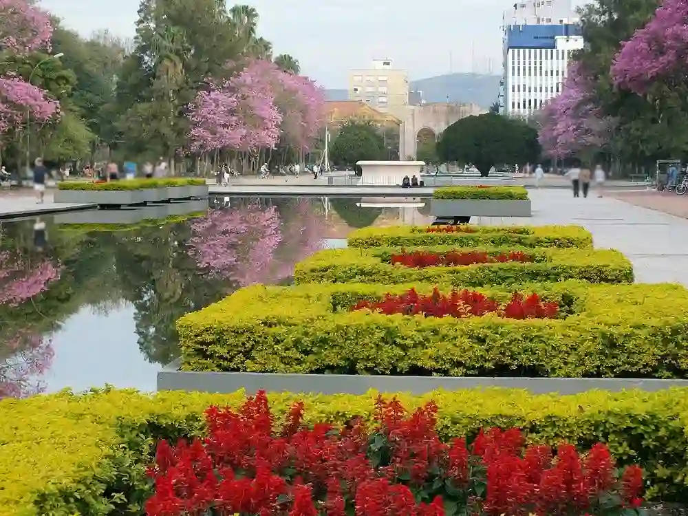
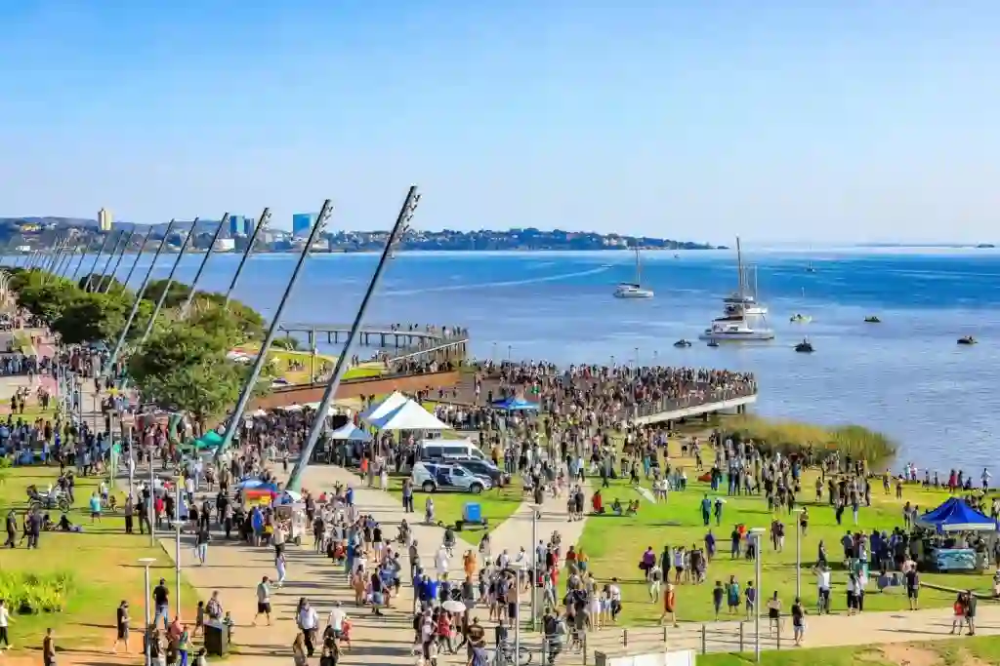
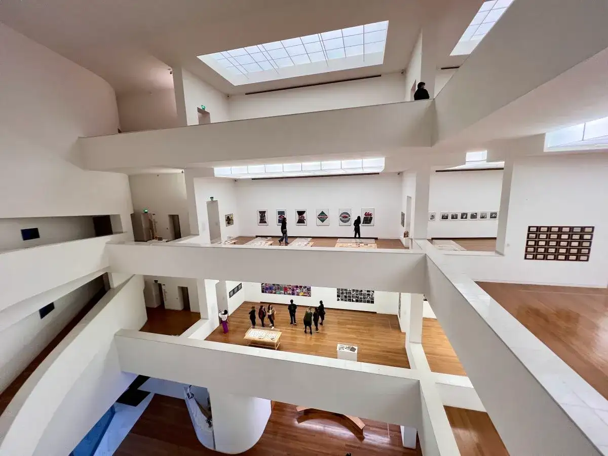

Redemption park
Farroupilha Park, popularly known as Redenção, is the most famous urban park in Porto Alegre.
Discover the most iconic places in the capital of Rio Grande do Sul.
No attractions found.

Farroupilha Park, popularly known as Redenção, is the most famous urban park in Porto Alegre.

One of Porto Alegre's most important landmarks, famous for its sunsets over the Guaíba.

A modern art museum designed by architect Álvaro Siza.
Churrasco is one of the most famous traditions of Rio Grande do Sul. It is prepared over charcoal and served in traditional steakhouses.
A traditional dish made with rice and dried beef, originally prepared by wagon drivers traveling across the southern region.
Chimarrão is a traditional South Brazilian drink made from yerba mate and shared among friends and family.
Porto Alegre was founded in 1772 and became the capital of Rio Grande do Sul. Throughout its history, the city received immigrants from Portugal, Germany, Italy, and other countries, shaping its rich cultural identity.
Today, Porto Alegre is known for its historical architecture, cultural institutions, and beautiful views of the Guaíba River.
One of the most important celebrations in Rio Grande do Sul, honoring the traditions and history of the gaúcho people.
One of the largest open-air book fairs in Latin America, attracting thousands of visitors every year.
A popular cultural attraction where locals and tourists gather to enjoy one of the city's most famous sunsets.